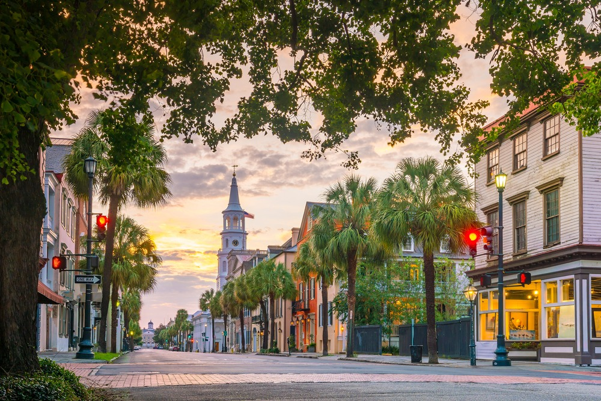
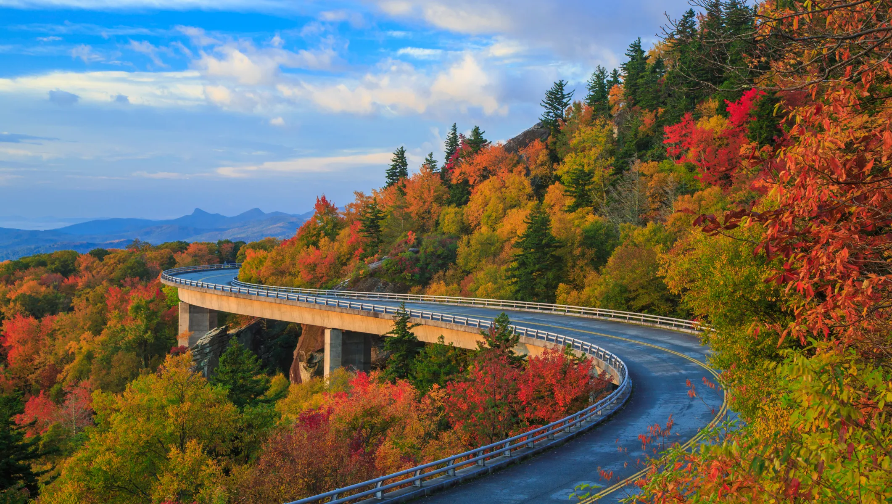
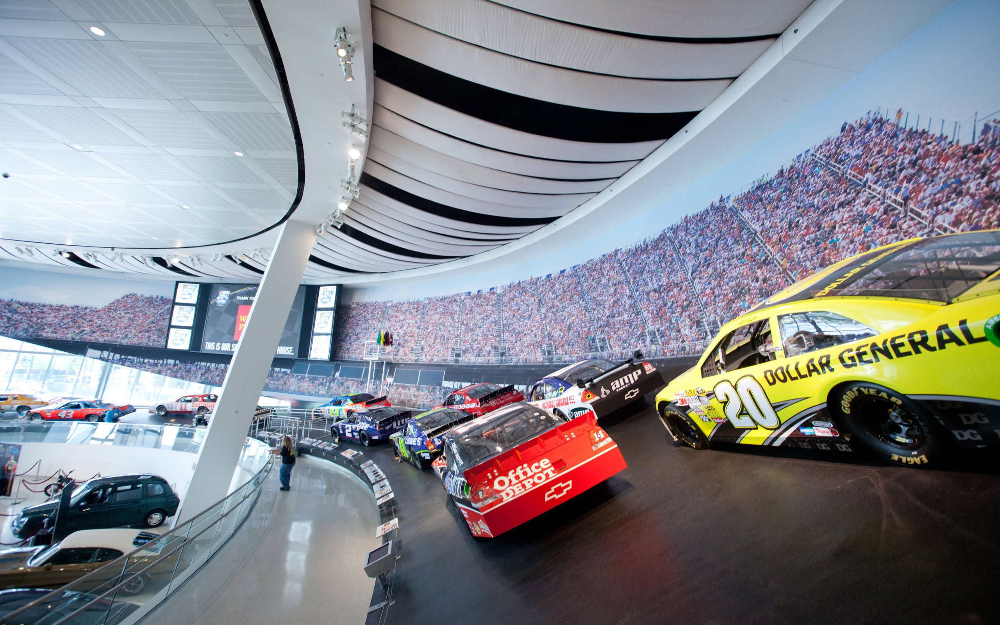
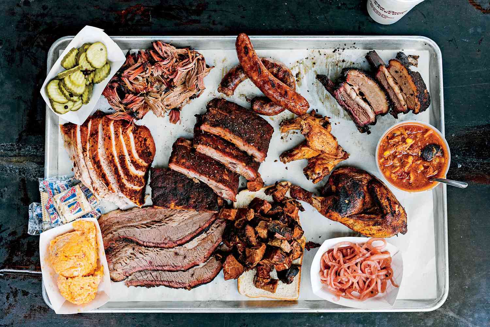
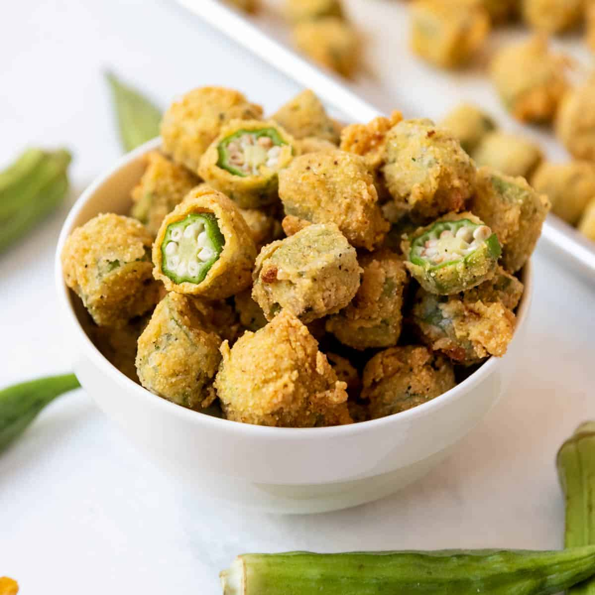
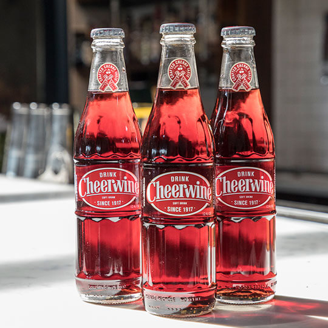

Living in South Carolina and North Carolina has cultivated my identity. There is so much history, lessons, and rich gems found in the Carolina's. The Carolina's is full of historic sites, beautiful mountains and beaches, numerous activities, and the best food. Culture's found in the South is unlike anything, and living in the Carolina's has given me the opportunity to be a disciple of Christ and grow in my testimony of Heavenly Father and Jesus Christ.
South Carolina Adventures
Hilton Head Island
Myrtle Beach
Charleston's Historic District
Fort Sumter
South Carolina Plantation Gardens
Charleston Historic District

Rainbow Row
Myrtle Beach
Fort Sumter
North Carolina Adventures
Blue Ridge Parkways
The Biltmore
Outer Banks
NASCAR Hall of Fame
Carowinds
The Biltmore
Blue Ridge Parkways

NASCAR Hall of Fame

Top 10 Best Staple Foods and Drinks in the Carolina's
BBQ
The Carolina's is home to the best barbecue like ribs, brisket, and pork chops.
Biscuits and Gravy
A popular breakfast dish.
Boiled Peanuts
Irresistable snack that is boiled in salt water for hours to be soft and full of flavor.
Fried Seafood
Anything fried is perfection. Fried seafood is a fan favorite.
Okra
A vegetable that is fried or boiled to create pickled Okra, that is sweet.
Pimento Cheese
A popular cheese spread that is put on anything from crackers to sandwiches.
Hushpuppies
Light and flakey cornmeal dough that is fried, and is a perfect side with barbecue.
Shrimp and Grits
Traditional breakfast dish that is served all day long at most southern restaurants.
Cheerwine
A cherry-flavored soda drink produced in 1917 in North Carolina.
Fried Green Tomatoes
A summer snack using unripened tomatoes, cornmeal breading that is fried, and served with sauce.
Barbeque

Fried Okra

Cheerwine

The Carolina's has some of the best food, but a lot of it is deep fried. Foods should be eaten in moderation. Here is a interactive tableau visual of county obesity, including the Carolina's.